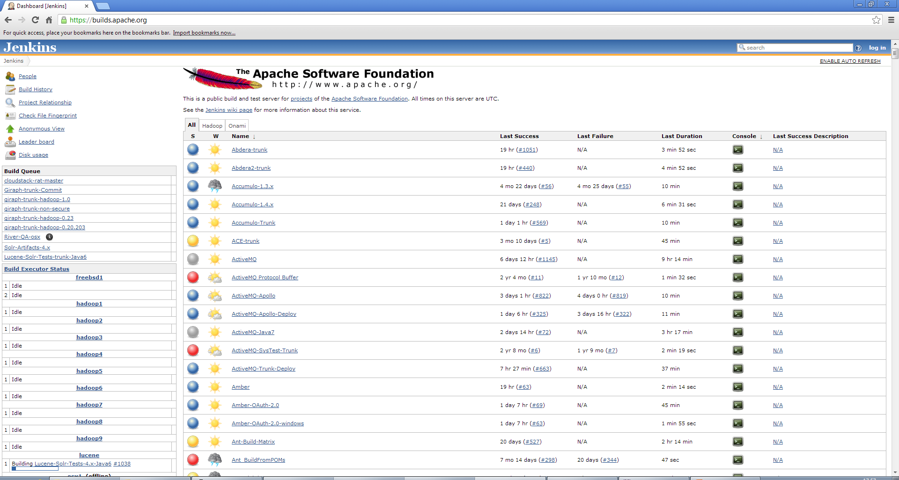
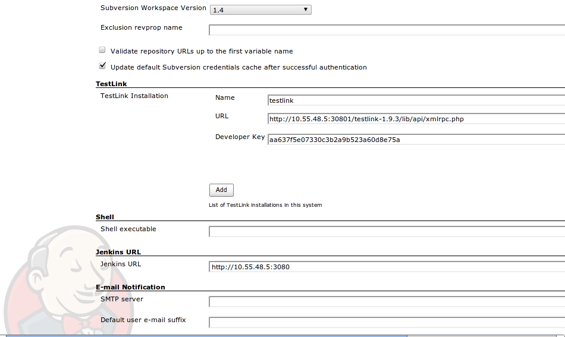
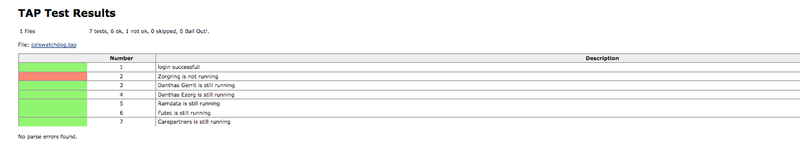
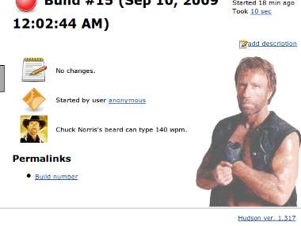
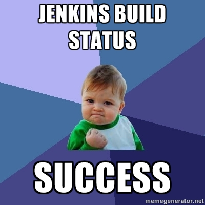

O básico para desenvolvimento de plug-ins para o Jenkins

Como será esta apresentação
- 40 minutos e 5 minutos para perguntas
- Desenvolvendo um plug-in Java de início a fim
- Utilizando Java, Eclipse e Maven
- Dicas serão apresentadas durante a apresentação
- Mostraremos como se envolver no projeto também!
- Seguiremos o tutorial para desenvolver plug-ins do Wiki do Jenkins
- Código no github - @kinow
https://wiki.jenkins-ci.org/display/JENKINS/Plugin+tutorial
O que é Jenkins?
- Servidor de Integração Contínua Open Source
- Née
Hudson - Extensível - Mais de
400600 plug-ins - Notificações - Envio de e-mails, IRC, GTalk, SMS, mísseis USB, ...
- Independente de linguagem de programação (Ruby, Lua, C, Perl, ...)
- Ótimo para automatização!
- Simples de usar
- Ótima comunidade e documentação

http://www.jenkins-ci.org
Get all the Plug-ins!
Jenkins TestLink Plug-in
Jenkins TAP Plug-in
Jenkins Chuck Norris Plug-in
Jenkins Meme Generator Plug-in
E muito mais (600+)
- JClouds Plug-in
- Performance Plug-in
- Gerrit
- Git
- EnvInject
- PMD
- Publish over SSH
- ...
O que plug-ins podem fazer?
- Modificar a UI
- Integrar Jenkins com outros sistemas
- Executar um parser
- Coletar métricas do build
- Chamar outras API's como Twitter, JMS, SAP, etc
- Utilizar serviços em nuvem
- Rodar Jenkins como nó Hadoop
- Chamar um cluster PBS e executar um programa MPI (BioUno)
- Há diversos extension points
Exemplos de extension points
- hudson.slaves.ComputerListener (hadoop, keep-slaves-offline, monitoring)
- hudson.slaves.Cloud (Amazon EC2, Lab Manager)
- hudson.tasks.test.TestResultParser (utpsql, core)
- hudson.tasks.Builder (TestLink, Ant, CCM, Gradle, MsBuild)
Obrigado!!!
kinow@apache.org
bruno@tupilabs.com
www.tupilabs.com
@kinow, @tupilabs